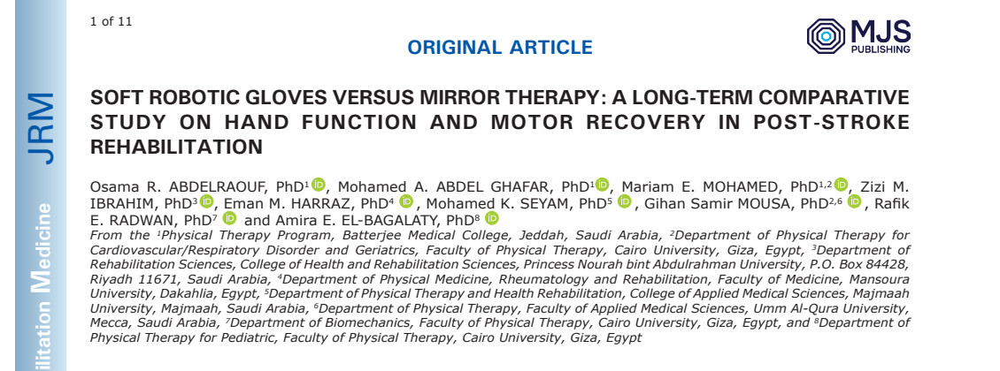

Columna de investigación clínica Syrebo
Lecturas basadas en la evidencia sobre la rehabilitación robótica de la mano
Del artículo
Soft robotic gloves versus mirror therapy: a long-term comparative study on hand function and motor recovery in post-stroke rehabilitation
Abdelraouf OR, et al.
Journal of Rehabilitation Medicine, 2025
DOI: 10.2340/jrm.v57.43482 · PMID: 40874348 · NCT05898971



La terapia de espejo usa la entrada visual para reclutar el lado afectado. Un guante robótico blando usa un accionamiento flexible para repetir la apertura y el cierre. Qué cambio dura más no puede responderse el último día de entrenamiento. Un ensayo aleatorizado simple ciego de 2025 en el Journal of Rehabilitation Medicine comparó los dos enfoques, ambos junto con rehabilitación convencional, durante ocho semanas y siguió a las personas hasta los seis meses. El artículo informa diferencias entre grupos estadísticamente significativas a favor del grupo que añadió el guante en el Box and Block Test, la fuerza de prensión y el FMA-UE al final del entrenamiento, e informa que las ganancias de ese grupo seguían presentes a los seis meses.
La pregunta que importa después del entrenamiento de la mano es si el cambio sigue presente durante el seguimiento. La terapia de espejo es sencilla y depende de la atención al miembro reflejado. Un guante traslada la repetición a un actuador externo, con otra exigencia de atención y resistencia. Ambos son métodos de rehabilitación. Esto no es una clasificación de marcas.
Una puntuación el último día de entrenamiento puede confundir un estímulo breve con un cambio estable. Una comparación aleatorizada con una visita a los seis meses es lo que hace posible esa distinción.
El artículo identifica a Shanghai SiYi Intelligent Technology como fabricante del guante, la empresa detrás de Syrebo. No especifica un modelo de producto. La fotografía de la columna muestra un montaje de entrenamiento con espejo E12; no se ha establecido que corresponda al modelo del estudio.
Diseño del estudio
En esta comparación aleatorizada simple ciego, ambos grupos recibieron primero fisioterapia convencional y después entrenamiento con guante robótico blando o terapia de espejo. La terapia convencional continuó durante los seis meses de seguimiento. Los resultados fueron la destreza de agarre y suelta (Box and Block), la fuerza de prensión y el movimiento del miembro superior (FMA-UE), con una visita seis meses después del entrenamiento.
Muestra y pauta
El resumen describe 49 personas aleatorizadas. La descripción del flujo del estudio indica 54 personas aleatorizadas y 49 que completaron el seguimiento y se incluyeron en el análisis. Las demás cifras de cribado e inclusión del artículo también difieren, y algunas partes del diagrama de flujo requieren aclaración. El entrenamiento duró ocho semanas. El registro es NCT05898971.
Resultados principales
Al final del entrenamiento el artículo informa diferencias entre grupos a favor del grupo que añadió el guante a la rehabilitación convencional: Box and Block P=0,004, prensión P=0,011, FMA-UE P=0,021. Según el artículo, a los seis meses las ganancias de ese grupo seguían presentes. Esos valores de P describen esta muestra. No asignan un tamaño de recuperación a cada paciente.
La información extra es el tiempo. Los autores informan que la diferencia entre estos programas de rehabilitación se mantenía en la visita de seguimiento, mientras continuaba la terapia convencional. Esto ofrece al profesional clínico una perspectiva más prolongada que una comparación el último día de entrenamiento.
Las 49 personas incluidas en el análisis, según el flujo del estudio, siguen siendo una muestra pequeña. Las diferencias basales, el lado de la lesión y la práctica durante el seguimiento pueden influir en una puntuación a los seis meses. El hallazgo pertenece a esta población y a este contraste.
Límites La descripción del flujo del estudio indica 49 personas incluidas en el análisis. Las cifras de cribado e inclusión y algunas partes del diagrama de flujo requieren aclaración. Algunas descripciones estadísticas difieren entre el texto y la tabla o necesitan aclaración por otros motivos. Los valores de P y el mantenimiento de las ganancias son el informe del estudio, no una promesa de producto.